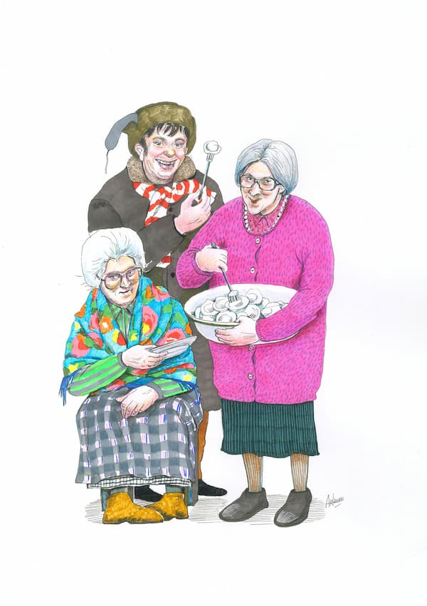
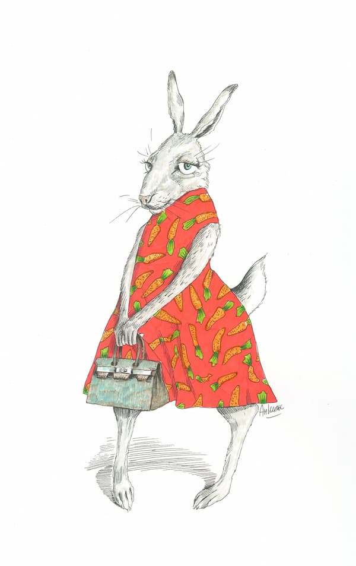
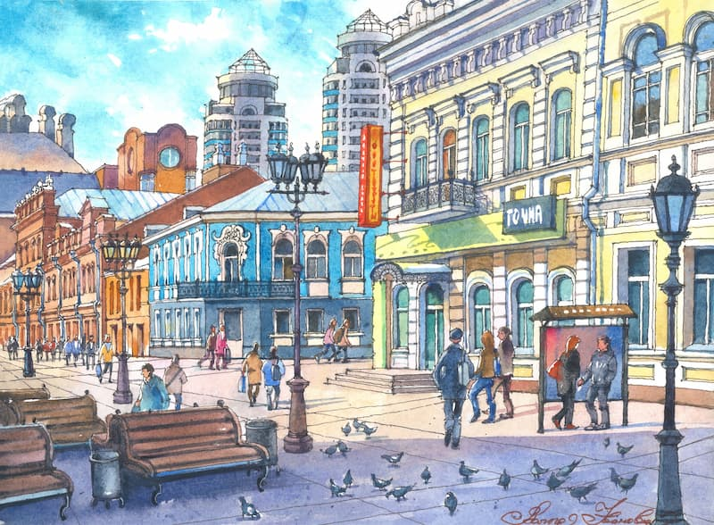
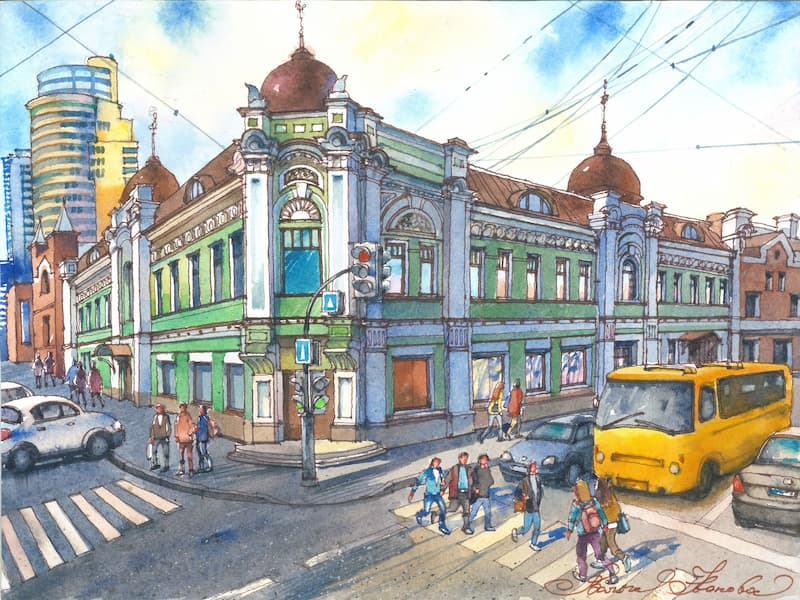
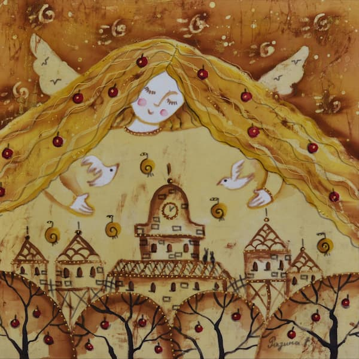
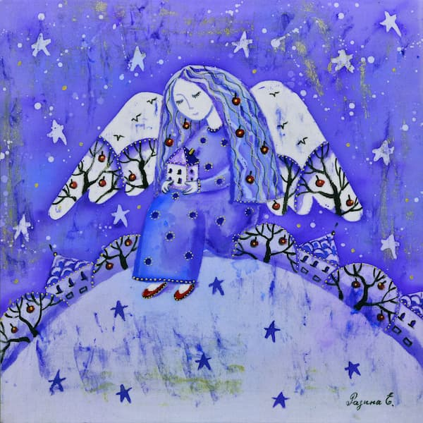
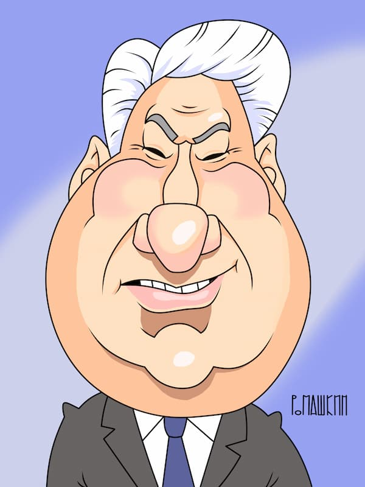
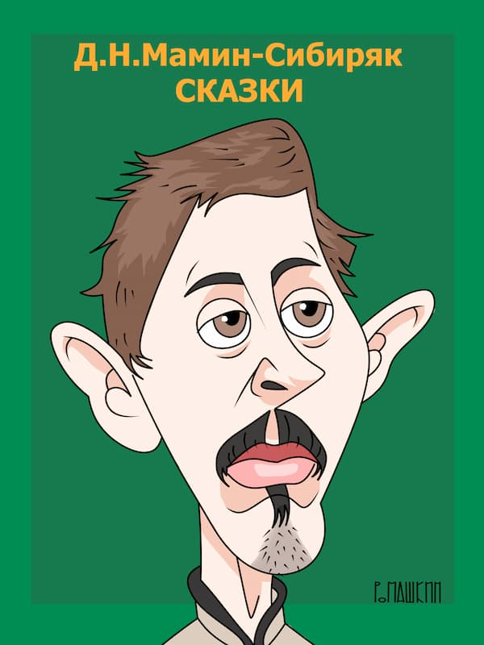

Урал в Красках Таланта: Как "ИПК Лазурь" Создает Уникальные Сувениры с Художниками
От Идеи до Коллекционного Изделия: Полиграфия как Искусство в Екатеринбурге
Вдохновение приходит неожиданно. После поездки в Санкт-Петербург, где поражает разнообразие стилей, в которых художники изображают любимый город, родилась мечта: показать Урал во всей его многогранности – через палитру разных глаз, эмоций и талантов. Так в типографии "ИПК Лазурь" начался уникальный проект по созданию сувенирной продукции в сотрудничестве с художниками со всей России и ближнего зарубежья.
От Идеи до Продукта: Непростой, но Увлекательный Путь
Как признается владелица типографии, Татьяна Александровна Деева, путь от замысла до готового сувенира редко бывает прямым и быстрым. Иногда, увидев работы художника, сразу рождается идея, как воплотить его стиль в конкретном изделии. Иногда идея сувенира есть, а поиск подходящего по стилю и духу художника может занять месяцы. "Это даже не совсем бизнес, а больше увлечение", – отмечает Татьяна Александровна. Но когда удается совместить талант художника и задумку, рождается по-настоящему интересный продукт.
Производство и Полиграфия: Наши Мощности и Партнеры
Типография "ИПК Лазурь" активно использует собственную производственную базу для выпуска сувениров. Мы применяем современные технологии печати, включая высококачественную офсетную печать, для точной передачи всех нюансов художественных работ. Если продукт требует специфических материалов или технологий, мы привлекаем надежных поставщиков. Но вот упаковку – визитную карточку любого подарка – мы проектируем и производим исключительно сами, уделяя этому особое внимание.
Дизайн и Реализация: От Картины к Сувениру
После того как художник создает рисунок или картину по нашему заказу, в работу вступает наш дизайнер. Его задача – адаптировать художественное произведение для конкретного носителя (магнита, блокнота, кружки и т.д.), подготовить макет к печати, продумать композицию. За годы работы на предприятии скопилась внушительная коллекция оригинальных картин и рисунков, ставшая нашим творческим капиталом.
Творческие Союзы: Особенности Работы с Художниками
Художники – люди особенные, с яркими характерами. Работать с ними одновременно сложно и невероятно интересно. "Каждый со своим характером и своими тараканами", – с улыбкой говорит Татьяна Александровна. Команда типографии учится находить общий язык, терпеливо выстраивая диалог и безмерно уважая талант и самобытность каждого. Мы всегда заключаем официальные договора, четко прописывая права и условия сотрудничества. Важно: Мы никогда не используем работы художника в коммерческих целях без его прямого согласия, даже если нам кажется, что это могло бы стать для него отличной рекламой. Имя автора обязательно указывается на всех изделиях.
Наши Художники и Их Творения: Палитра Урала
Мы сотрудничаем с самыми разными мастерами – от начинающих до признанных мэтров. Критерий один: оригинальность идеи и умение передать дух Урала. Кто-то виртуозно создает шаржи, кто-то – сатирические зарисовки, а кто-то с любовью изображает улицы и здания Екатеринбурга. Вот лишь несколько имен из нашей галереи:
-
Анастасия Нильская: Ее озорные "Уральские пельмени" и "Кролик в кедах" (со
стихотворением!) украсили серию блокнотов.


-
Мгер Чатинян (Армения): Его завораживающая картина "Вечерний Екатеринбург"
сделала сувениры с этим сюжетом хитом продаж.

-
Ольга Иванова (Беларусь): Ее сказочные виды улиц Екатеринбурга на магнитах
вызывают восторг у туристов.


-
Елена Разина: Ее нежные ангелы, укрывающие город, создают особое настроение.


-
Нил Анкушин: Поселил уютных котов Матиса на Режевском пруду.

-
Василий Ромашкин (псевдоним): Автор серии шаржей "Город и горожане" с
узнаваемыми персонажами.


-
Альберт Чатиян: "Вырастил" экзотические лилии Мане в водах пруда Исети.
...и многие другие талантливые авторы!